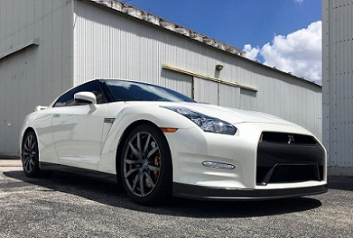
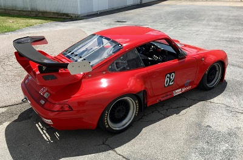

 Testimonials
This place is kinda hard to find but definitely worth it. Clint took great care of my M3, was very professional, and extremely knowledgeable. Clint gave me a very reasonable up front quote and I was able to watch while he did my exhaust install. I don’t trust very many people to work on my new car but was more than happy to see how well he took care of it. Would definitely recommend.
-Reggae P. Belleville Canada
Very very efficient, accurate and professional with their service. They even called to check and see if everything was working. Highly recommend their services.
–Kimberly Lopez
I’d had my Mini into a couple of shops for alignment and they couldn’t get it right. Clint figured out the problem and got it perfect. I needed some other deferred maintenance work done and it was done right, quickly, with a fair price and no oversell. I’m very satisfied and I see where all these 5 star ratings come from. By appointment but well worth the wait. For those of you who are reading this testimonial I would like to say from the get-go that these guys are just short of being able to walk on water. If you do not avail yourselves of their services you are only hurting yourself.
-Scott D.
First impression: I scoured the web for Miata freaks in Houston and ran into many positive and no negative references to Gas Head Motorworks, Clint and/or Sam. OK, it’s worth the effort for me to drive in from Montgomery with my new convertible top in the trunk and check ‘em out. I turn them loose and go get a bite to eat. When I get back I notice a screw missing from one of the sun visor brackets and, pointing to a similar screw in another location on the car and ask, “If you happen to have an extra one of these screws lying around would you put it in my sun visor bracket? I see I’m missing one.” Clint (without pausing): “You don’t want that screw in your sun visor bracket, you want a pan head screw. That’s a flat head screw.” When was the last time you were in the presence of a someone so thoroughly steeped in the details of their profession? Needless to say the top replacement was without flaw. I soon returned for their Maximus Tune up/Check out. Their work transformed the characteristics of the car from “slop and flop” to “snick and click”. Everything was tight and true and it was difficult for me to keep the grin off my face.
-Ray Bennett
My 2000 Miata has found a new garage, when it needs repairs. Clint took my car in, replaced the timing belt and other repairs that were needed to keep it running brand new and he was done the following day. In by 10 am Wednesday, done by the end of the day Thursday! Picked the car up and the engine was clean, even more clean than the day it rolled out of the plant. Beyond reasonable pricing and very professional. Thanks Clint, the car works great.
-Jamie House
There is a reson you will see nothing less than five stars as ratings for Gas Head. They earn every star. I heard rave reviews for several years from all the other Lotus owners who had taken their cars to Gas Head, but had not taken my Elise there because their location is just not convenient for me. Now I am a convert. These guys are the real deal. They know what they are doing. They are honest. They will tell you what they can do and when they can do it and be absolutely right most of the time. They will also advise you what they think you should not do if they think it is not good value for you. They care about each car as if it was their own and their lives depended on things being done right. If I could give a higher rating I would.
-Reid Albin
- Phone: +1 (713) 461-7575
- email: clint@gasheadmotorworks.com
Sample page created 2021